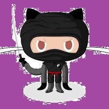

Richard's Page
Start to create the amazing page!

My Skybox
using [←(A)，↑(W)，→(D)，↓(S)] for moving your eye direction
if it does not display, add command to your browser "--allow-file-access-from-files"
My Resume
Hello, This is my resume site!
My Github